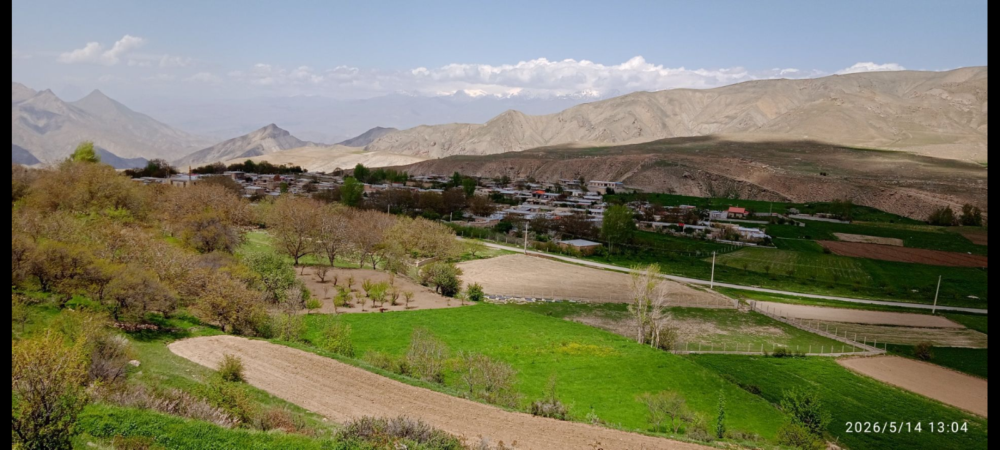

وبسایت معرفی روستا
به وبسایت روستای کمارسفلی خوش آمدید. اینجا فضایی برای معرفی روستا، نمایش تصاویر، فرهنگ و انتشار اخبار و اطلاعات محلی است.
کمارسفلی، روستایی با طبیعت و چشماندازهای دیدنی است. هدف این وبسایت معرفی بهتر روستا، ثبت تصاویر، نگهداری خاطرات و به اشتراک گذاشتن اطلاعات مربوط به این منطقه است.

منظره طبیعت و چشمانداز کمارسفلی
در این بخش میتوانیم درباره آدابورسوم، زبان، خاطرات قدیمی، سنتها و زندگی مردم کمارسفلی مطالب بیشتری منتشر کنیم.
اخبار، رویدادها و اطلاعیههای محلی در این قسمت منتشر خواهند شد.